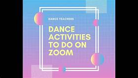

About us
Activites
Sign up
Contact us

Activities
1 Languages of TelanganaThe Culture of Telangana in India has a cultural history of about 5,000 years. The region emerged as the foremost centre of culture in Indian subcontinent during the rule of Kakatiya, the Qutb Shahi and Asaf Jahi dynasties— (also known as the Nizams of Hyderabad). The rulers' patronage and interest for arts and culture transformed Telangana into a unique multi-cultural region where two different cultures coexist together, thus making Telangana the representative of the Deccan Plateau and its heritage with Warangal and Hyderabad being its epicenter. The regions' major cultural events celebrated are "Kakatiya Festival" and Deccan Festival along with religious festivals Bonalu, Bathukamma, Dasara, Ugadi, Sankranthi, Milad un Nabi and Ramadan.[1]
Telangana State has long been a meeting place for diverse languages and cultures. It is known as "South of North and North of South".[2] It is also known for its Ganga-Jamuna Tehzeeb and the capital Hyderabad is known as a miniature India.[3][4]
Contents
1 Languages of Telangana
2 Literature
3 Religion
3.1 Major Religious Structures
3.2 Banjara (Lambadi) spiritual / religious persons
4 Festivals
4.1 Regional festivals
5 Visual arts
5.1 Paintings
5.2 Sculpture
5.3 Architecture
5.3.1 Kakatiya
5.3.2 Indo-Islamic
5.3.3 Modern
6 Cultural sites
7 Cuisine
8 Performing arts
8.1 Dance
8.2 Music
8.3 Oggu Katha
8.4 Cinema
9 Notes